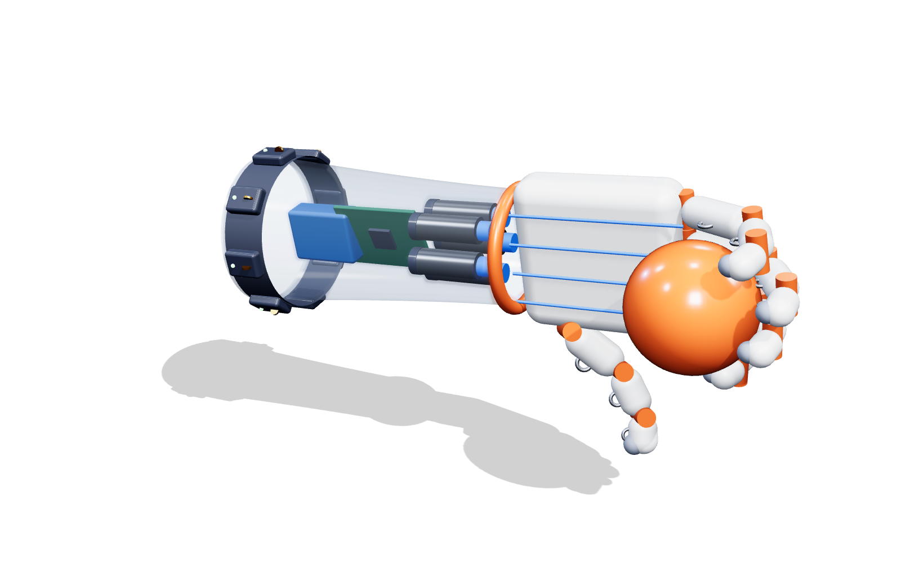

A hand that keeps learning its owner. This is the map: the idea, the steps, the timeline, and where we are today.

Roadmap · written 18 Nov 2026Dates are planning guesses, not official deadlines
01 · The idea
A hand that gets better the longer you use it
The problem and our answer, in one picture.
The product has three parts
Why the brain matters most: the band and the hand are known engineering. The learning brain is what nobody else has built the way we want to. That is what we prove with numbers.
Roadmap · the idea2
02 · The versions
Six steps. Each one must work before the next.
Like a staircase: we never skip a step.
What you can show at each step
v0
One chart
Our brain stays accurate over days; a normal one gets worse. Real recordings, no hardware.
v0.5
Brain running live
A program pretends to be the band by replaying recordings.
v1
One finger moves
You tense your arm and one real finger curls.
v2
Hand grips things
5 fingers and a thumb that swings across the palm.
v3
Our own data
Real people wear the band; the hand sits on a stand next to them.
FINAL
At the competition
Poster, demo, and practice answering judges.
The safety net: if the hardware is late, v0 still gives you real results for the written application, because it uses real recordings from other scientists.
Roadmap · versions3
03 · The timeline
Who does what, and when
From today (18 Nov) to early March.
Be careful with these dates. The "(?)" markers are copied from last year's cycle, not from this year's rules. Your job: find the real deadlines and replace the guesses.
Why the first two bars matter: the agreement between you and your friend (what the band sends, what the software sends back) is the one thing that can break the whole team. Do it first.
Roadmap · timeline4
04 · Where we are now
Two steps done, one to go
What the first real look at the data showed
Subject 1, one movement, morning of day 1 vs afternoon of day 3. Values read by eye from your chart, so they are approximate.
SEEN
The big channels stayed put
Channels 0 and 8 are the same size on both days. The band did not slide around.
SEEN
Some channels got louder
Channels 6 and 13 roughly doubled. It looks like a strength change.
CAUTION
Only a first hint
One person, one movement. The real test is whether a classifier gets worse (M3).
Also found: one grasp is a single unbroken stretch of about 6.7 s, longer than the 4 s cue, because the dataset's authors adjusted the labels afterwards. This matters for how you label windows in M2.
Roadmap · where we are5
05 · What comes next
Steps M2 to M6, one picture each
Each step produces something you can see on a screen.
M2 · YOU ARE HERE
Turn a wiggly line into numbers a computer can learn from
M3
Frozen brain: train once, never change
That drop is the problem we are solving.
M4
Recalibrated brain: retrain every session
Good, but the user must stop and retrain.
M5
Adapting brain: learns while you use it
Step 1: re-balance channel strength. Step 2: learn from "right or wrong" feedback.
M6
The final chart: all three, all 10 people
Goes into the written application.
Charts above are pictures of the hypothesis, not results. The experiments decide whether the orange line really stays on top.
Roadmap · next steps6
06 · How we work
Roles, rules, and the decisions that are yours
YOU
Write the core code: features, classifiers, the adapting part. Understand every line, because judges will ask.
YOUR FRIEND
Builds the band, the hand and the motors. Decides the finger design.
CLAUDE (mentor)
Builds tools around your code, reviews your plans, and tries to find holes before a judge does.
Five rules for honest results
1
Test on a different dayNever mix training and test data from the same moment.
2
Look at every grip"Rest" is about 25% of data, so average accuracy lies.
3
Day 1 sets the settingsLater days are the exam. No peeking.
4
Ten people, not oneOne person is a story, ten is a result.
5
Made-up data never goes on the posterSynthetic data only checks that the code runs.
Decisions that belong to you
1
The reward
How does the brain learn it was right? A button, the task result, or the person correcting itself?
2
What to call it
Probably a "contextual bandit", a simple form of reinforcement learning. Defend the name.
3
The goal in numbers
"Stay above X% for T hours with no recalibration."
4
Finger design
Friend's call: two strings or a linkage. Plan so far: 6 motors.
5
Testing rules
What permission is needed before anyone, even you two, is tested?
6
Project name
It goes on the poster.
Roadmap · how we work7
07 · Cheat sheet
Words, and this week's checklist
Words explained
EMG · the tiny electric signal your muscles make
Decoder · software that guesses the grip from the EMG
Drift · the signal slowly changing over hours and days
Frozen · trained once, never changed
Recalibration · stopping to retrain the decoder
Adapter · our part that keeps updating the decoder
Window · a short piece of signal cut out for analysis
Feature · a number describing a window, e.g. how strong
Baseline · what we compare ourselves against
Reward · the "right or wrong" message the brain learns from
Channel · one sensor on the band
Synthetic · made-up data, only for testing code
This week
Free disk space. Aim for 5 GB or more free before downloading anything else.
Write your M2 plan in 3 to 4 sentences: window and step sizes in samples at 2000 Hz, and how you label a window that is half rest and half movement.
Do the feature tests on paper using the small array in tests/test_features.py.
Find which ID is which grasp in the Palermo et al. 2017 paper (the dataset page does not say).
Ask your friend: two strings or a linkage? What parts do you already have?
Find the real deadlines and the human-testing rules for the competition.
Remember: don't write any code in features.py until your plan has been reviewed. Send the plan first.